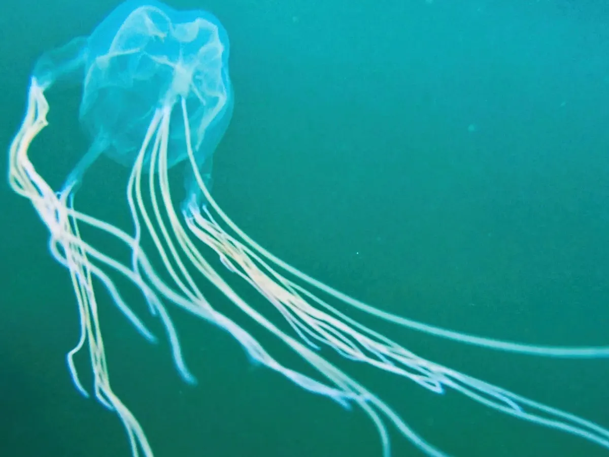

The Box Jellyfish (Cubozoa) is known to carry the most deadly venom in the world. Their boxy like shape gives them its name with its tentacles growing up to 10 feet in length. They contain up to half a million micro needles in their tentacles.
They mainly live in the Pacific and Indian oceans. Their lives are very short, living an average lifespan of 3 months. Box Jellyfish are a little slow when it comes to speed, traveling an average speed of 4.6 mph.